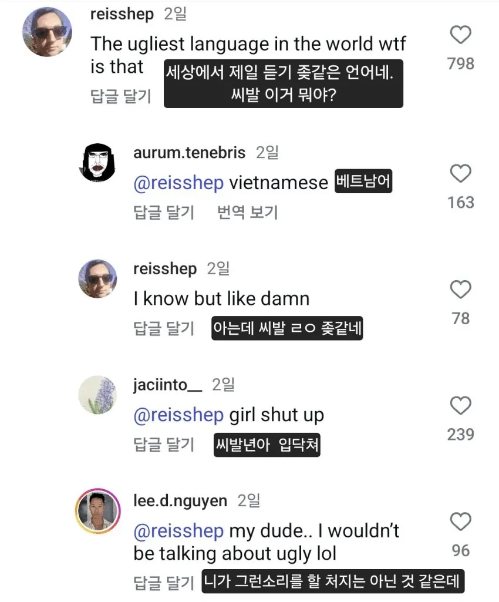
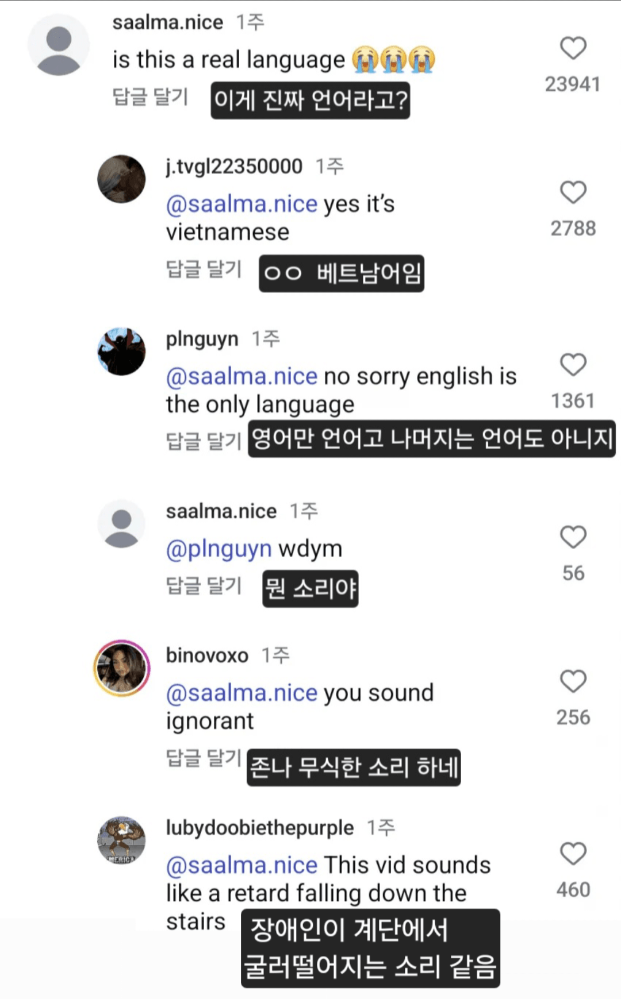

https://www.fmkorea.com/best/10363919831 복사
Use Up/Down Arrow keys to increase or decrease volume.1.00x


장애인이 계단에서 굴러떨어지는 소리ㅋㅋㅋㅋㅋㅋㅋㅋㅋㅋㅋㅋㅋㅋㅋㅋㅋㅋㅋㅋ
ㅊㅊhttps://www.fmkorea.com/best/10363919831
https://www.fmkorea.com/best/10363919831 복사
Use Up/Down Arrow keys to increase or decrease volume.1.00x


장애인이 계단에서 굴러떨어지는 소리ㅋㅋㅋㅋㅋㅋㅋㅋㅋㅋㅋㅋㅋㅋㅋㅋㅋㅋㅋㅋ
ㅊㅊhttps://www.fmkorea.com/best/10363919831
병신짓하는 새끼들이 전체를 욕먹게 하는건 세계 어디에서나 있는 일임
고유언어인건 잘알고 무시하면 안된다는거 잘아는데;;;;;
정말 순수하게 들었을때의 감정을 이야기해보자면 골때리긴함 진짜 ㅋㅋㅋㅋㅋㅋㅋ
진짜 왠만해서는 노래부르면 음율이 다 들을만은 한데
베트남쪽은 엄두도 안나더라;;;; 아예 전용으로 별개의 장르가 있어야 할거 같은느낌이랄까
고맙다. 이거듣고 영어듣기 실력이 더 오른거 같다
뭐 이렇게까지 패는거야 이제는...?;;
난 난민, 개발도상국 애들 애지간하면 안팰란다
어짜피 우리나라도 십몇년지나면 타국애들 다받아야되 노동력 부족해서, 이미 1차 산업쪽은 다 동남아, 중앙아시아 애들 천국임
받을 필요가 오히려 적어질걸
급격히 AI + 로봇 보급률 높아지고 있고
다문화/다인종 부작용이 사회적으로 끼치는 비용이 너무 커서
아 특이점 언제 오냐구 ㅋㅋ
타국애들 더받으면 한국 ㅈ될것같은데
베트남어 진짜 문제가 단어 숫자가 진짜 개 창렬로 적음
이 모지리들은 다른 나라에서 A-1/A-2/A-3 구분해서 말하는 단어를 지들은 그런 단어 없다고 A로 퉁쳐서 부르고는 문제 없다함
그러면 시발 영어나 원어로라도 말하고 써라하는데 교육이 덜 된 멍청한 통역원들은 단어가 없는데 어떻게 통역하냐 이지랄하고 지들 꼴리는 데로 통역했다가 나중에 들켜서 존나 욕쳐먹고
걍 못배워서 아님? 크레올어도 아니고 티나게 적을 이유가 없는디
뭔가 중국어랑 사촌형제 같은데 좀 더 껄렁하고
양아치 같은 느낌이랄까 ㅋㅋㅋ
진짜 좀 듣기에 정리 안되고 난잡한 느낌이긴함
순수하게 궁금하다 왜 저딴식으로 발전한거지? ㅋㅋ
항상 속으로만 생각했는데 먼저 시비를 걸어주니까 좋네 ㅋㅋㅋㅋㅋㅋㅋ
편견없이 들으려고 해도 존나 듣기 힘드네 시벌거
남부랑 북부 단어선택도, 억양도 확 차이나는 편인데, 북부는 성조 고저차이가 심하지 않고 좀 흐리멍덩하게 말하는 느낌이라면, 남부는 진짜 고저차이 개심하게 띠용띠용하는 느낌으로 말함. 저건 확실히 남부발음.
동남아 언어는 다 거기서 거기
ㄹㅇ 거기서 거기야
다 듣기 싫지
남쪽 오랑캐의 말은 때까치새의 울음소리와 같다 -맹자-
여행하다 보면 정말로 듣기 싫은 언어가 몇가지 있는데
베트남어는 뭐랄까 싫은건 아닌데 말을 거꾸로 하는 느낌이었음
어떤 언어는 다른 언어보다 듣기 좋고
어떤 언어는 다른 언어보다 듣기 싫지
이건 사실이야
프랑스어를 들으며 황홀해하는 것도 당연하고
동남아쪽 언어를 들으면서 귀를 막고 싶어지는 것도 당연한거임
둘다 듣기싫음
갠적으로 정말 졷같은 언어는 쨩꼐어고 이건 칠판을 손톱으로 긁는듯한 소리로 들림
두번째는 애매한데 베트남어 정도면탑3에 들어갈만한거 같음 발달장애인 2명이 섹스하면서 나오는 신음같은 소리임
마지막은 프랑스어
언어 못하는 장애인이 어떻게든 말할려고 이상한 소리내는 느낌임
프랑스어가 듣기 싫다고??
샹송이 아름다운 이유는 프랑스어빨이 큰데
프랑스박이 게이야 가서 엘랑이나해라
?
샹송이 세계적으로 히트친건 사실인데
물론 너가 듣기 싫으면 너한테는 듣기 싫은거지만
그럼그럼 세계적으로 페이위칭도 히트쳤지만 중국어 성조 듣기 싫은거랑 똑같은거임. 어떤 사고방식을 거쳐야 엘랑어 들으면 황홀하다는게 당연하다는건지 감도안잡힘
일반적 인식이 그러하니까.
매트릭스 리로디드에서 메로빈지언이 '프랑스어는 환상적이야. 프랑스어로는 욕을 해도 비단으로 뒤를 닦는 느낌이야.' 라는 대사를 했을때 사람들이 수긍한거는 프랑스어 이미지가 그만큼 우아하고 아름다우니까.
https://youtu.be/td1K15jw0FA?si=4cIpYmvx7iDU7Pqj
저 대사에 중국어나 베트남어가 들어가면 아무도 수긍하지 않았을걸?
수백년간 유럽 전체에서 귀족들 언어+교양어로 쓰였었고
지금도 서구에서 스테레오타입으로 '프랑스어하는 남자는 섹시해' 같은게 도는거나
파리가 로맨스의 도시, 프랑스어는 로맨스의 언어로 꼽히는 것도 일반적 인식이고.
물론 니 취향과 안맞으면 안맞는건데
저게 일반적 인식인건 그냥 사실임.
따갈로그어 들어보면 아마생각이 바뀔거다..
근데 또 신기하게 광둥어를 들을만해 홍콩영화봐도 그렇고
나도 프랑스어 느끼해서 듣기 싫음
개인적으로 프랑스 싫어해서 더 그런 것 같기도
프랑스어가 제일 고급언어 느낌인데
성조가 6개에 단어들도 짧은데 비슷비슷해보이는게 조온나 많음
에이 설마.. 비슷한 단어를 나열한겠지.. 진짜 베트남어 이래? 삥봉봉뽕 거리는데?
왜난 플레이가 안대농
유심히 들어본적도 없고 별 생각 없었는데
작년 롤드컵에서 벳남애가 이기고 인터뷰하는데
존나 개구리 응축된 응꾹꽉레야~ 소리가 나서 깜놀함
중국어보다 더 좃같은 언어가 있다니 시발 ㅋㅋㅋ 아무말이나 지껄이면 저소리 나오던데 ㅋㅋㅋㅋㅋ
진정해 이런 후진국 애들한테 정신소모 하는건 낭비임
"동남아 인종차별 하지마!"
우리가 선진국 욕은 안한다고 생각하는건가?
저건 영상때메 억양이 좀 과장된듯 ㅋㅋㅋ 남부 사투리같은데 거긴 좀 알아듣기 더 힘듬ㅋㅋㅋ
혓바닥 관련된 뇌세포에 쉬프트가 눌려있나 ㅃㅉㄸㄲㅆ가 빠지질 않네
응우옌 실제 발음 듣고나서, 한글로 쓴 게 이상하지 실제 베트남어 발음들은 괜찮지 않을까 생각했었는데
이건 진짜 상상이상이네.
장문복 렙하는 것 같은데
ㄹㅇ 베트남국수나 짜장면으로 안태어나서 다행임;
베트남 1억 230만명 중에서 무개념 배그 플레이어나 SNS로 한국 공격하는 새끼들은 반의 반도 안될텐데 그나라의 언어까지 욕하는건 좀 어...